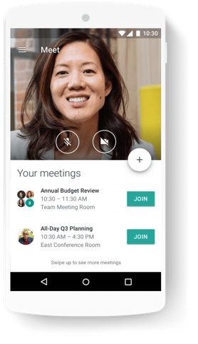
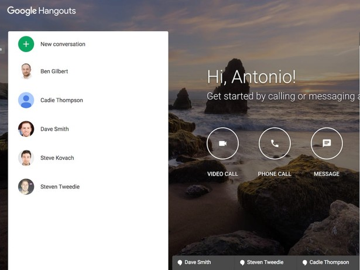
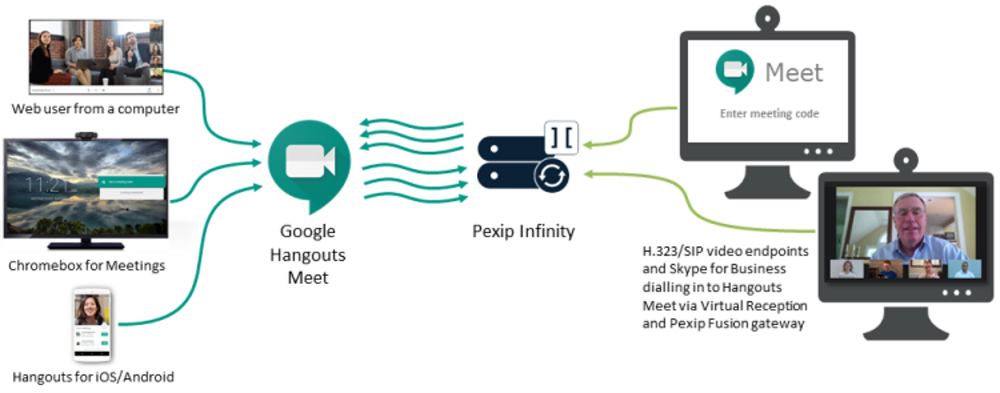

The purpose of this document is to provide the audience with a general understanding how Google Meet works and the physical concepts that were used to create this software Google Meet. This document will focus on how to use Google Meet and the general dynamic of Google Meet rather than a specific product (such as Zoom). There are a ton of video conference software available on the Internet. To name a few, there is Zoom, GoToMeeting, Skype and Google Meet. Google Meet is the most commonly used software for people to have conferences on the Internet. Google Meet is a communication software product developed by Google. Google Meet was originally a feature of Google+ that would later become a standalone product in 2013. Google would also begin to integrate features from Google+ Messenger and Google Talk into Google Meet. In 2017, Google began to develop Google Meet into a product aimed at enterprise communication. After reading this document the audience will have a history of Google Meet, and understand how to work Google Meet.
The intended audience for this document is upperclassman in high school and college students who are interested in the Science, Technology, Engineering and Math (STEM) fields. This document will make clear connections between the concepts that are learned in STEM related courses and how you can use these concepts to create software products. The understanding of creating software products like Google Meet will give the audience a better idea of the things that they can do in careers in the STEM fields.
Google Meet is a communication software product developed by Google. Google Meet is written in the software language called Java. Google Meet became a standalone product in 2013. Google would then start developing Google Meet to become an enterprise communication tool. Google Meet is now part of the Google Suite line of products which consist of Google Meet and Google Hangout Chat.

The steps for starting a video meeting are to start a meeting from a web browser, mobile phone or a Google calendar event that includes a video meeting link. The exact steps are to: In a web browser, enter http://meet.google.com followed by:
In order to understand how a video conference works, we need to discuss a few of the basic concepts of video conferencing. Video conferencing means to conduct a conference between two or more participants at different sites by using computer networks to transmit audio and video data. For example, a point-to-point (two-person) video conferencing system works much like a video telephone. Each participant has a video camera, microphone and speakers mounted on the computer. As the two participants speak to one another, their voices are carried over the network and delivered to the other’s speaker. In addition, whatever image appear in front of the video camera in a window on the other participant’s monitor.

Google Meet is a standard-based video conferencing application using proprietary protocols for video, audio and data transcoding. Google has partnered with Pexip to provide interoperability between the Google protocol and standard-based SIP/H.323 protocol to enable communication between Google Meet. Google Meet comes with additional features designed for business use which include:
With advancements in technology working from home has become a possibility for many workers. Google Meet and other conference technologies allow for people to work from home and have tele-health meetings with doctors, and technical interviews for software engineering roles. I personally love using Google Meet and I have had several interviews with software companies for internships. I will continue to use Google Meet as technology brings us closer together as humans.
Most of the knowledge in this paper has come from my experience using Google Meet which I have used for technical interviews with software companies.
For the Project Formatting with HTML and CSS, I decided to create a separate CSS style sheet and link it to the HTML project file. Using an external CSS file allowed me to separate the content and structure of the HTML document from the visual presentation of the webpage. This made the HTML easier to read and gave me the opportunity to make formatting changes in one location without having to change each HTML element individually.
For the CSS style sheet, I created several selectors to control the appearance of different elements throughout the document. I started by styling the H1 and H2 headings to make the title and sections easier to identify. I experimented with borders, text colors, spacing, and a different font family to improve the overall appearance and readability of the page. I also attempted to match the colors used in the CSS with the colors found in the image included in my document. I selected colors such as light gray, light golden yellow, maroon, white, red, and black to create a consistent visual design.
Another important part of the assignment was learning how to use margins, padding, and borders with figures. I added a one-pixel light gray border around the figures, one em of padding inside the figure, and two ems of margin outside the figure. This helped me better understand the CSS box model and the difference between padding and margins.
One trade-off I had to consider was choosing colors that met the assignment requirements while keeping the document readable. For example, I used red text for strong emphasis and a light yellow background for emphasized or italic text. Overall, this project helped me understand how HTML provides the structure of a webpage while CSS controls its presentation and visual appearance.